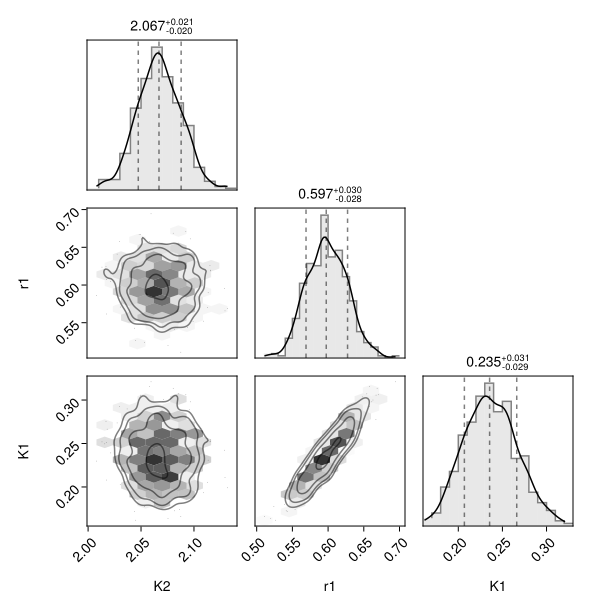
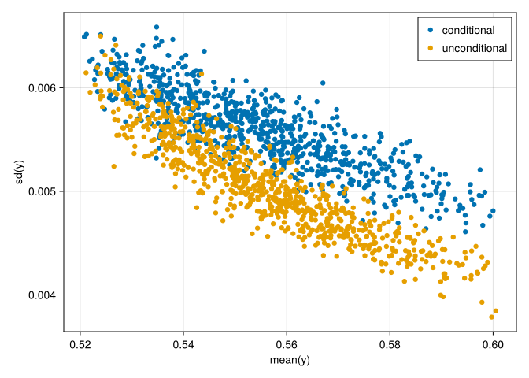
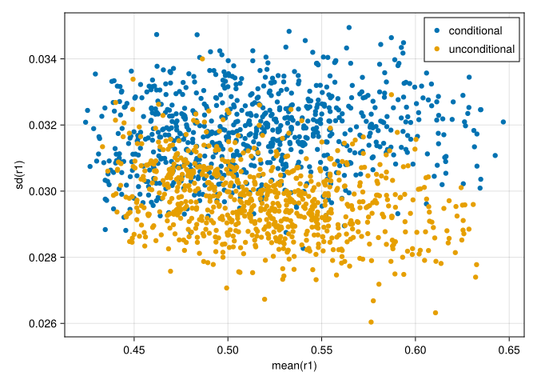
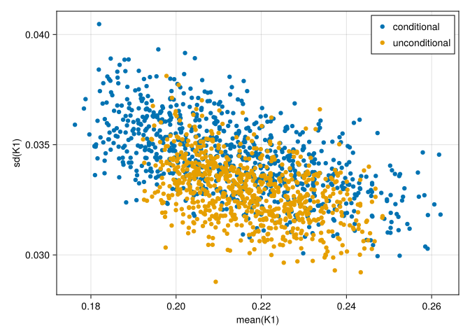

How to account for correlations between site and global parameters
This guide shows how to configure providing certain global parameters as covariates to the ML model.
Motivation
HVI requires the site-parameter blocks in the correlation matrix to be independent of the global-parameter block.
However, correlations between site and global parameters can be modeled by predicting different (transformed) site parameters, $\zeta_{Ms}$ , given the sampled (transformed) global parameters, $\zeta_P$.
\[ p(\zeta_{Ms}, \zeta_P) = p(\zeta_{Ms} | \zeta_P) p(\zeta_P)\]
This comes at the cost of running the ML model forward for each sampled global parameter, rather than just once in each sampling of the posterior.
First load necessary packages.
using HybridVariationalInference
using ComponentArrays: ComponentArrays as CA
using Bijectors
using SimpleChains
using StatsFuns
using StableRNGs
using MLUtils
using JLD2
using Random
using CairoMakie
using PairPlots # scatterplot matricesThis tutorial reuses and modifies the fitted object saved at the end of the Basic workflow without GPU tutorial.
fname = "intermediate/basic_cpu_results.jld2"
print(abspath(fname))
prob = probo_uncond = load(fname, "probo");The pbm_covars entry in the HybridProblem
When constructing a HybridProblem, the names of the subset of global parameters provided to the ML model is specified using the pbm_covars argument. It defaults to the empty tuple (), meaning that no global parameters are provided as inputs.
The following specification tells, that the K_2 parameter should be provided as input to the ML model.
pbm_covars = (:K2,)The modified Machine-Learning model
The ML model needs to be adapted to consume more inputs than the site covariates. Note the changed n_input specification compared to the Basic workflow without GPU tutorial.
n_out = length(prob.θM) # number of individuals to predict
n_covar = 5 #size(xM,1)
n_input = n_covar + length(pbm_covars)
rng = StableRNG(111)
g_chain = SimpleChain(
static(n_input), # input dimension (optional)
TurboDense{true}(tanh, n_input * 4),
TurboDense{true}(tanh, n_input * 4),
# dense layer without bias that maps to n outputs to (0..1)
TurboDense{false}(logistic, n_out)
)
# get a template of the parameter vector, ϕg0
g_chain_app, ϕg0 = construct_ChainsApplicator(rng, g_chain)
#
priorsM = Tuple(prob.priors[k] for k in keys(prob.θM))
lowers, uppers = get_quantile_transformed(priorsM, prob.transM)
FT = eltype(prob.θM)
g_chain_scaled = NormalScalingModelApplicator(g_chain_app, lowers, uppers, FT)Update the problem and redo the inversion
prob_cond = HybridProblem(probo_uncond; g=g_chain_scaled, ϕg=ϕg0, pbm_covars)using OptimizationOptimisers
import Zygote
solver = HybridPosteriorSolver(; alg=Adam(0.02), n_MC=3)
(; probo) = solve(probo_uncond, solver;
callback = callback_loss(100), # output during fitting
epochs = 20,
); probo_cond = probo;Compare the conditional vs unconditional posterior
First, draw a sample.
n_sample_pred = 400
(y_cond, θsP_cond, θsMs_cond) = (; y, θsP, θsMs) = predict_hvi(
Random.default_rng(), probo_cond; n_sample_pred)
(y_uncond, θsP_uncond, θsMs_uncond) = (; y, θsP, θsMs) = predict_hvi(
Random.default_rng(), probo_uncond; n_sample_pred)i_site = 1
θ1 = vcat(θsP_uncond, θsMs_uncond[i_site,:,:])
θ1_nt = NamedTuple(k => CA.getdata(θ1[k,:]) for k in keys(θ1[:,1])) #
plt = pairplot(θ1_nt)
The corner plot of the independent-parameters estimate shows that despite providing K_2 to the ML model, it has only very weak correlations with the site parameters, $r_1$ and $K_1$.
i_out = 4
fig = Figure(); ax = Axis(fig[1,1], xlabel="mean(y)",ylabel="sd(y)")
ymean_cond = [mean(y_cond[i_out,s,:]) for s in axes(y_cond, 2)]
ysd_cond = [std(y_cond[i_out,s,:]) for s in axes(y_cond, 2)]
scatter!(ax, ymean_cond, ysd_cond, label="conditional")
ymean_uncond = [mean(y_uncond[i_out,s,:]) for s in axes(y_uncond, 2)]
ysd_uncond = [std(y_uncond[i_out,s,:]) for s in axes(y_uncond, 2)]
scatter!(ax, ymean_uncond, ysd_uncond, label="unconditional")
axislegend(ax, unique=true)
fig
plot_sd_vs_mean = (par) -> begin
fig = Figure(); ax = Axis(fig[1,1], xlabel="mean($par)",ylabel="sd($par)")
θmean_cond = [mean(θsMs_cond[s,par,:]) for s in axes(θsMs_cond, 1)]
θsd_cond = [std(θsMs_cond[s,par,:]) for s in axes(θsMs_cond, 1)]
scatter!(ax, θmean_cond, θsd_cond, label="conditional")
θmean_uncond = [mean(θsMs_uncond[s,par,:]) for s in axes(θsMs_uncond, 1)]
θsd_uncond = [std(θsMs_uncond[s,par,:]) for s in axes(θsMs_uncond, 1)]
scatter!(ax, θmean_uncond, θsd_uncond, label="unconditional")
axislegend(ax, unique=true)
fig
end
plot_sd_vs_mean(:r1)
plot_sd_vs_mean(:K1)
The “conditional” scenario allows for correlations between global and site parameters by making precitions of site parameters conditional on sampled global parameters.
It estimates slightly higher marginal uncertainties, both of the predictions and of the model parameters.